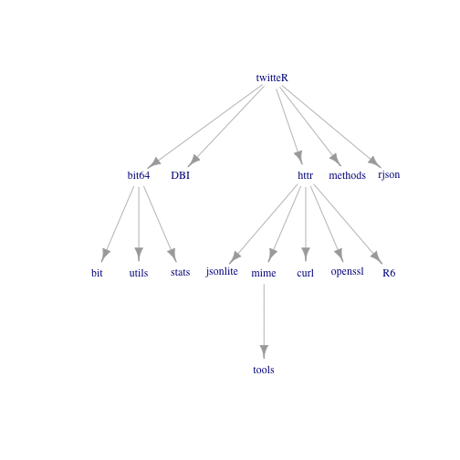

xwMOOC 기계학습
R 팩키지 사회망 분석
R 생태계 사회망 분석 1 2
1. R 팩키지 데이터
R 팩키지는 Depends, Imports, Suggests 세가지 의존성을 갖는다. 특정 팩키지가 어떤 의존성을 갖는지 library(tools)를 불러와서 available.packages() 명령어를 활용하면 모두 파악할 수 있다.
library(tools)
local({r <- getOption("repos");
r["CRAN"] <- "http://cran.r-project.org"; options(repos=r)})
pkgs <- available.packages()
# View(pkgs)
str(pkgs) chr [1:8375, 1:17] "A3" "abbyyR" "abc" "ABCanalysis" ...
- attr(*, "dimnames")=List of 2
..$ : chr [1:8375] "A3" "abbyyR" "abc" "ABCanalysis" ...
..$ : chr [1:17] "Package" "Version" "Priority" "Depends" ...
데이터분석 당일(2016-05-12) 기준 행숫자를 통해 8343개 팩키지가 존재한다. 17개 칼럼으로 구성된 데이터프레임으로 첫번째 칼럼에 8343 팩키지가 쭉 나열되어 있다.
2. 데이터 전처리
데이터프레임으로 정리되어 있던 데이터를 사회망분석을 위한 자료구조로 변환한다. src 팩키지가 어떤 팩키지에 dep 의존되는지와 더불어, label에서 어떤 형태인지를 함께 담겨있다.
library(plyr)
edges <- ldply(
c('Depends', 'Imports', 'Suggests'), function(depLevel) {
deps <- package.dependencies(pkgs, depLevel = depLevel)
ldply(names(deps), function(pkg)
if (!identical(deps[[pkg]], NA))
data.frame(
src = pkg,
dep = deps[[pkg]][, 1],
label = depLevel,
stringsAsFactors = FALSE))
}
)
tail(edges) src dep label
41221 zoon spocc Suggests
41222 ztable MASS Suggests
41223 ztable survival Suggests
41224 ztable testthat Suggests
41225 ztable knitr Suggests
41226 ztable moonBook Suggests
3. 기초 통계량
중심성(centrality) 은 전체 연결망에서 중심에 위치하는 정도를 표현한다. 또한, dep 칼럼을 통해 가장 의존성이 많은 팩키지를 식별할 수도 있다. 이를 통해, 특정 팩키지를 용도폐기하는 경우 영향도를 파악해볼 수 있다.
8343 팩키지에 36,265 의존관계가 존재하니, 밀도가 0.000625632으로 그리 높지 않다. 밀도(density) 는 전체 팩키지가 서로 얼마나 많은 관계를 맺고 있는지를 측정하는 지표다. 그렇게 높지 않는다는 것은 다행스러울 수 있는데, 이유는 팩키지간 의존성이 높지 않아 유지보수를 고려할 때 손이 덜 간다는 것을 의미한다.
str(edges)'data.frame': 41226 obs. of 3 variables:
$ src : chr "A3" "A3" "A3" "abbyyR" ...
$ dep : chr "R" "xtable" "pbapply" "R" ...
$ label: chr "Depends" "Depends" "Depends" "Depends" ...
suppressMessages(library(igraph))
g <- graph.data.frame(edges)
graph.density(g)[1] 0.0006504013
R은 팩키지가 아니어서 일단 제외하고 상위 가장 의존성이 높은 팩키지 10개는 stats, methods, MASS, testthat, knitr, utils, graphics, ggplot2, Rcpp, grDevices로 파악된다.
## 의존성이 큰 팩키지 상위 10개 추출, 단 R 은 제외
edges <- edges[edges$dep != 'R', ]
head(sort(table(edges$dep), decreasing = TRUE), 10)
stats methods MASS testthat knitr utils graphics
1681 1559 1135 1126 1056 1045 974
ggplot2 Rcpp grDevices
758 634 596
#head(sort(degree(g), decreasing = TRUE))매개 중심성(betweenness centrality) 은 팩키지 의존성에서 한 팩키지가 다른 팩키지 사이에 위치하는 정도로 중재자(broker) 역할의 정도를 측정하는 지표가 된다. Hmisc, ggplot2, nlme, AER, multcomp, MASS, sem, MBESS, systemfit, ,robustbase 팩키지가 중재자로서 중요한 역할을 하는 것으로 볼 수 있다. 예를 들어, ggplot2 가 용도폐기되는 경우, 직접적인 의존성에 영향을 받는 팩키지 말고도 다른 많은 팩키지도 상대적으로 부정적인 영향을 가늠해볼 수 있다.
head(sort(betweenness(g), decreasing = TRUE), 10) Hmisc ggplot2 nlme AER multcomp MASS
1222930.5 1151937.5 956897.2 862343.2 830265.1 800043.7
sem MBESS systemfit robustbase
751579.8 700140.0 624658.5 548210.3
4. 시각화
먼저 igraph를 사용해서 네트워크 시각화를 추진해본다. twitteR 팩키지에 대한 네트워크 연결성을 우선 살펴본다. 기계학습에서 많이 활용되는 caret (Classification And REgression Training) 팩키지 네트워크 연결성을 살펴보는 것도 인자를 바꾸어서 확인해 보라.
edges <- edges[edges$label != 'Suggests', ]
deptree <- edges$dep[edges$src == 'twitteR']
while (!all(edges$dep[edges$src %in% deptree] %in% deptree))
deptree <- union(deptree, edges$dep[edges$src %in% deptree])
g <- graph.data.frame(edges[edges$src %in% c('twitteR', deptree), ])
plot(g)
혹은, tkplot(g, edge.label = NA) 명령어를 통해서 인터렉티브 사회연결망 분석을 시도할 수도 있다.
vizNetwork 팩키지를 활용하면 자바스크립트를 활용하여 좀더 흥미로운 결과물을 생성할 수도 있다.
library(visNetwork)
nodes <- get.data.frame(g, 'vertices')
names(nodes) <- c('id', 'color')
edges <- get.data.frame(g)
visNetwork(nodes, edges)계층구조도 정의해서 위로부터 관계성을 살펴보는 것도 가능하다.
g <- dominator.tree(g, root = "twitteR")$domtree
plot(g, layout = layout.reingold.tilford(g, root = "twitteR"),
vertex.shape = 'none')